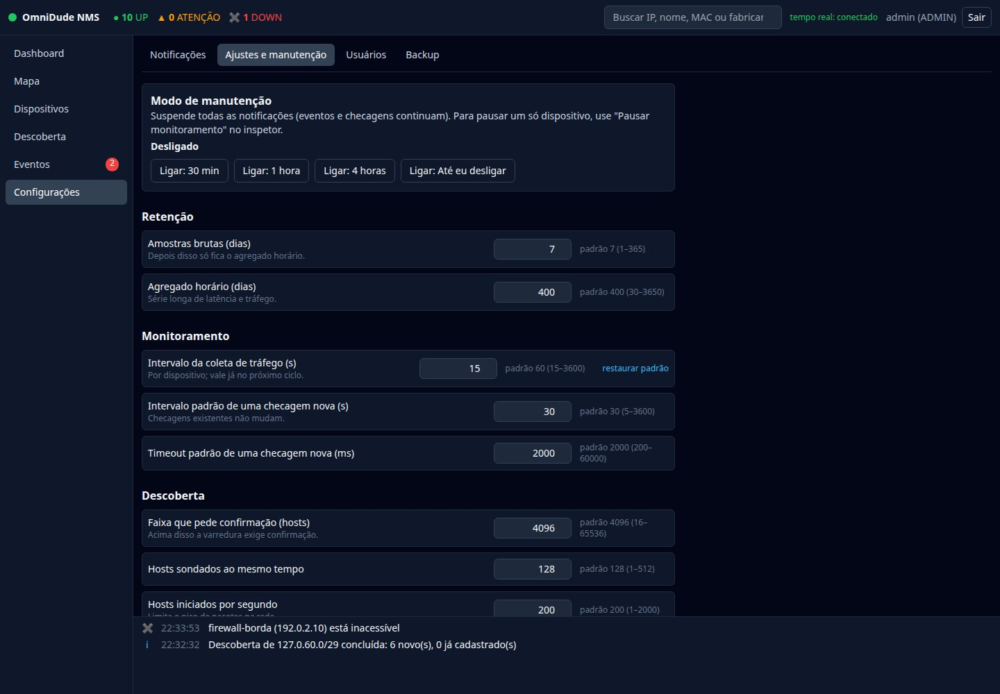
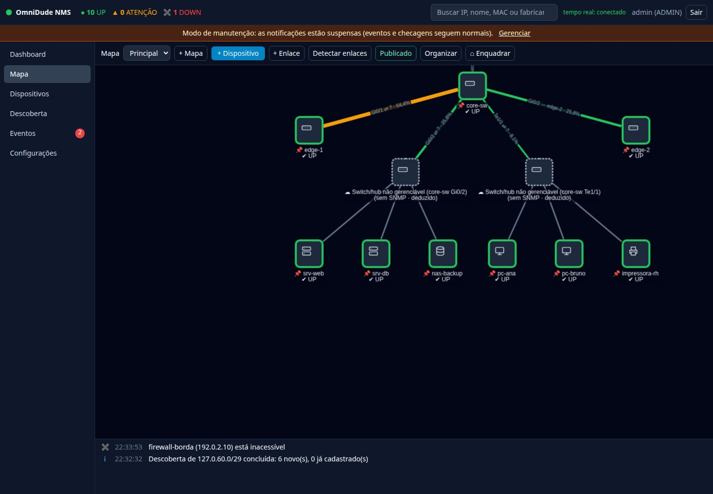
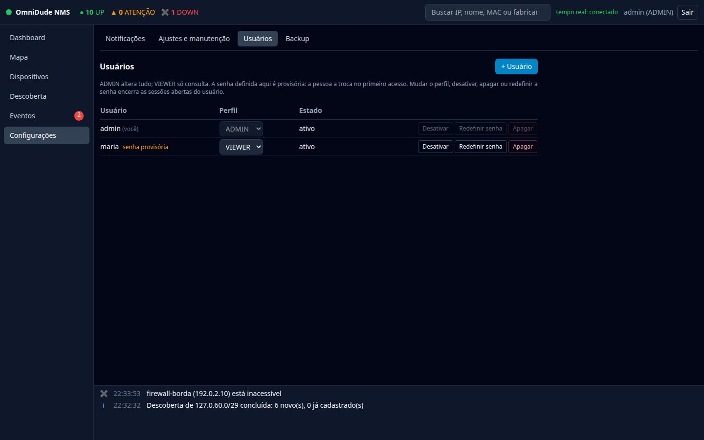
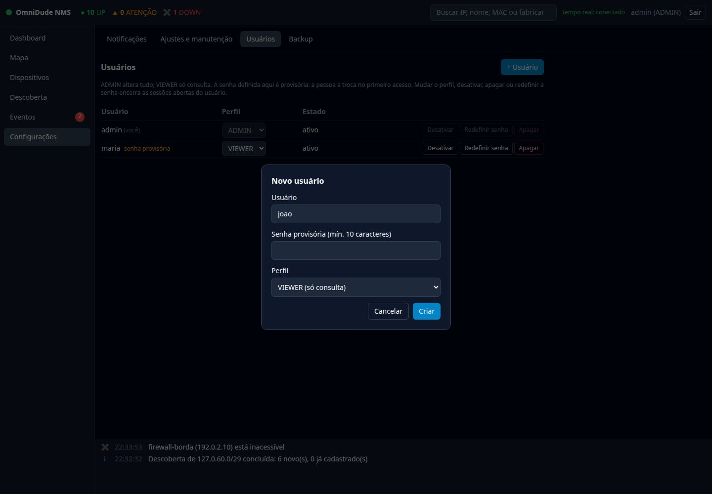
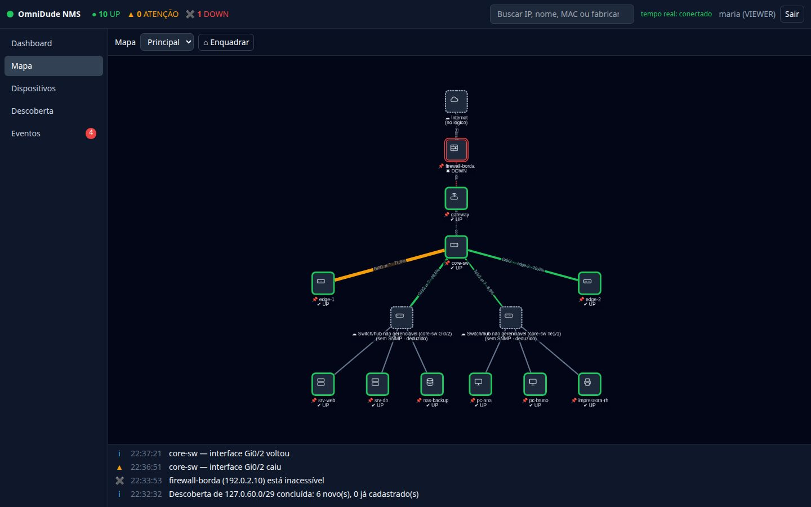
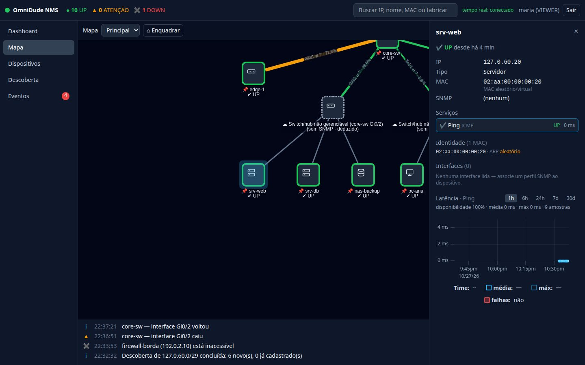
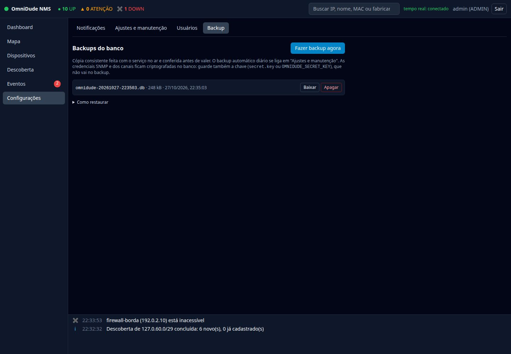

A tela Configurações existe só para o perfil ADMIN. Para o VIEWER ela não aparece, e as rotas correspondentes recusam qualquer acesso, mesmo de leitura. Há quatro abas: Notificações (capítulo 10), Ajustes e manutenção, Usuários e Backup.
Ajustes e manutenção#


Modo de manutenção#
Suspende todas as notificações enquanto você mexe na rede. Eventos e checagens seguem normais: só o envio para os canais é suspenso. Todos os usuários veem um aviso âmbar no topo da tela enquanto o modo está ligado.


- Ligue por 30 min, 1 h, 4 h ou até eu desligar. O prazo expira sozinho.
- O botão Gerenciar, no aviso, leva de volta a esta tela para desligar.
- Para pausar um único dispositivo, use Pausar monitoramento no inspetor.
Retenção de dados#
| Ajuste | Padrão | O que faz |
|---|---|---|
| Amostras brutas (dias) | 7 | Depois disso só fica o agregado horário. |
| Agregado horário (dias) | 400 | A série longa de latência e tráfego (gráficos de 30 e 90 dias). |
Antes de apagar as amostras brutas, o OmniDude gera o agregado horário, então você não perde a tendência. A limpeza roda uma vez por dia.
Os outros ajustes#
| Grupo | Ajuste | Padrão |
|---|---|---|
| Monitoramento | Intervalo da coleta de tráfego (s), por dispositivo | 60 |
| Intervalo padrão de uma checagem nova (s) | 30 | |
| Timeout padrão de uma checagem nova (ms) | 2000 | |
| Descoberta | Faixa que pede confirmação (hosts) | 4096 |
| Hosts sondados ao mesmo tempo | 128 | |
| Hosts iniciados por segundo | 200 | |
| Notificações | Janela anti-repetição (s); 0 desliga | 60 |
| Identidade (DHCP) | Atualizar o IP sozinho quando o dispositivo muda de endereço | ligado |
| Ler o ARP dos roteadores a cada (min); 0 desliga | 10 | |
| Backup | Backup diário automático | desligado |
| Hora do backup (0 a 23) | 3 | |
| Backups a manter | 7 |
O valor da tela vence o do application.yml e das variáveis de ambiente; restaurar padrão volta ao valor de fábrica. Cada ajuste mostra o limite aceito, e valores fora dele são recusados. O que muda de imediato vale já no próximo ciclo; os ajustes marcados como “exige reinício” só valem depois dele.
Usuários#


| Ação | Como funciona |
|---|---|
| + Usuário | Informe usuário, senha provisória (mínimo de 10 caracteres) e perfil. A pessoa troca a senha no primeiro acesso. |
| Mudar o perfil | ADMIN altera tudo; VIEWER só consulta. |
| Desativar / ativar | Um usuário desativado não entra. Preserva o registro. |
| Redefinir senha | Define uma nova senha provisória. |
| Apagar | Remove o usuário. |
Salvaguardas. Ninguém muda o próprio perfil, se desativa nem se apaga, e o último administrador ativo é sempre preservado. Qualquer mudança que afete o acesso de uma pessoa derruba as sessões abertas dela.


Visão do VIEWER#
O perfil de consulta vê o mapa, os inspetores, os gráficos, a lista de dispositivos e os eventos, mas não vê as ações de alteração e não tem Configurações. O servidor recusa qualquer escrita, mesmo que alguém tente chamar a API direto.




Backup e restauração#


Fazer backup agora (ou o backup diário automático, ligado em Ajustes) usa VACUUM INTO: uma cópia consistente e compacta com o serviço no ar. O arquivo é aberto e conferido (PRAGMA integrity_check) antes de valer. Fica em <dados>/backups/ (permissão 600), mantém os N mais recentes e dá para baixar e apagar pela tela.
Restaurar#
- Pare o OmniDude (
sudo systemctl stop omnidude). - Guarde o
omnidude.dbatual e apagueomnidude.db-waleomnidude.db-shm. - Copie o backup para o diretório de dados com o nome
omnidude.db. - Inicie de novo, com a mesma chave (
secret.keyouOMNIDUDE_SECRET_KEY).
A chave de criptografia não vai no backup. Sem ela, as credenciais SNMP e dos canais ficam ilegíveis. Guarde secret.key (ou o valor de OMNIDUDE_SECRET_KEY) em local separado e seguro.
Os backups ficam na mesma máquina do banco: copie-os para fora (outro servidor, armazenamento remoto) se quiser sobreviver à perda do disco.